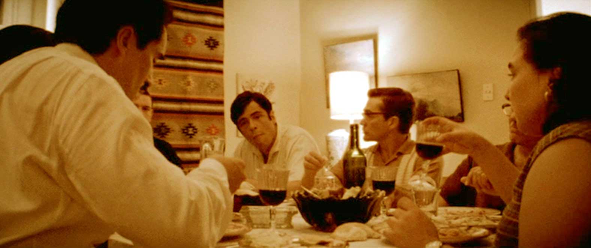
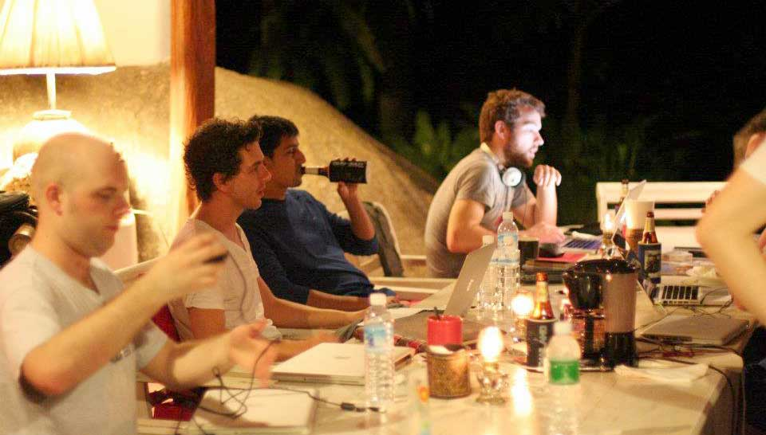
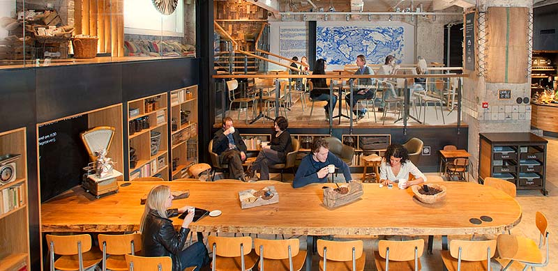
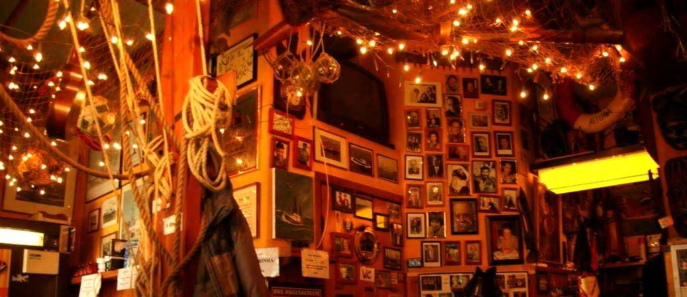
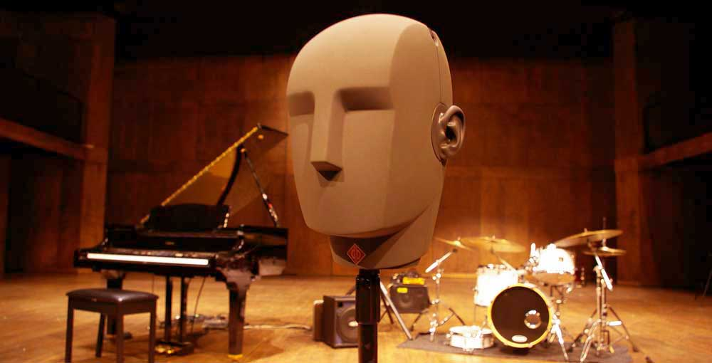
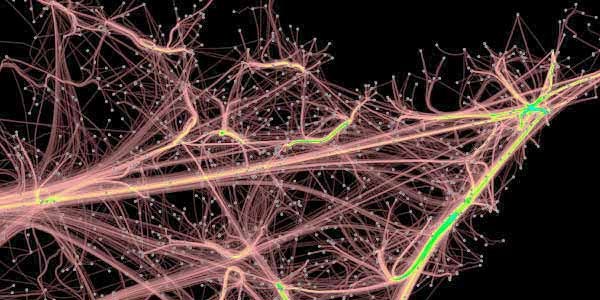

What makes a good life? When we chat at dinner parties and sip wine on the balcony, having a good time with friends, it's certainly a state of great well-being. Yet even in those festive moments, I feel the silent weight of time hastening through the hourglass: “Will I do something with this life?" I long for the discussions to have meaning, to lead to somewhere.
Imagine Castro and Guevara in a mundane setting, in the early days, talking about getting on a leaky boat (which they're yet to source) to take on an endeavour that at the time seemed obviously crazy. Nothing in that setting looked in any way different than what is around us, it's always the people who made the difference.

How do people come together to work on something? 1) They must be interested in the same pursuits, their concerns are aligned; 2) They have decided to work in a new venture, they are serious about it; and it's for the right reasons; 3) They find each other likeable, the team clicks, and it fits well.
The journey is likely to be rough. It's way beyond business networking, a picnic with friends, recruiting or work for hire. It's even more than character, temperaments, team fit, skill sets, and everything coming together. It's the pursuit of an ideal, of creating something that will make an impact and benefit millions of people.
This section is about what kind of company I want to build: what it is and what it is not. Let's look at three types.
First, a ‘typical start-up' (e.g. Color): driven by some charismatic founder(s) with a trendy idea, fabulous, field distorting pitch, hired an all-star team, and “just got their fourth round of financing".
Second, a spin-off from academia (e.g. reCAPTCHA), or a hacker-maker workshop (e.g. Oculus): experts who are into a specific field and really good at what they do, bringing the cutting edge to application.
The third starts as an agency (e.g. 37signals, Qvik, Envy Labs), doing 80% contract work to generate cash flow, build up the skill base, then investing 20% in innovation and their own projects.
My ideal is to resemble the second type. Even the third is better than the first, by virtue of being self-sustaining. In a sense, we are not a start-up, not a transient vehicle patched together, lumping towards round after round of expansion campaigns.
The company is more like a lab. It's tech-centric (rather than growth-centric), it has a focus on the ability to build and make something, on craftsmanship, on skill, on the joy of playing and experimenting with technology. It's also self-sufficient, we can just eat ramen and hack away.
We place value on being extremely good at what we do, on being the best in that field, not by whim, but through cultivation.
We emulate scientists who delight in discovery, in proving just as much in disproving theories, and statisticians with the grit to articulate assumptions and find the most direct ways to test them.
We find meaning, not in chasing business trends, but in building up skill and knowledge, in making something that works, in creating real value and solving some interesting problems (e.g. how to build a lemmatizer for another language); not for a pot of gold in the end, but for what we can do here and now, with our own hands.
Think of the venture itself as an obsessive hobby, the reason we build a viable business model is to further fund it.
Now many burgeoning companies feature an interior that resembles Google's Zürich office. There's something special about the beanbags, the translucent glass whiteboard panels, the ambience of a cozy café.
It's a reflection of the culture, the spirit of breaking free from corporate rigidness and 800-page specs. People are not just attending a job, but celebrating ingenuity in a place for experiments and discovery. After all it's not about the décor, you can be in a bare garage, and feel the same enthusiasm.
What we want is a wonderland of colourful lights, a playground to indulge in the joy of technology, a hacker-maker's radio shop paradise. We are here to build something cool, or even whimsical. “Wouldn't it be great if I had my own dodo skeleton!"
It's such a golden age, you can have your own sleep lab, leap motion dev kit, hackable Kinect, and stereoscopic virtual reality which you can even augment with cameras. The world is your lab. Try some 3D perceptual magic, or halucinate with ping pong balls.
What if we put the user in a sensory deprivation floatation tank for audio training? What if we apply transcranial stimulation? Brain imaging may be too much... At least we can test the effects of dummy head recording and immersive headphones, we can build our own eye-tracking kit to study user behaviour.
This is the “hackerspace spirit", a daring motivation to explore, to open the box, to “view the seal not as a warning but as an invitation". Whenever seeing something technical or complex, the first thought is not inhibition or deterrence, but excitement.
This is the spirit of a Renaissance company. It's not about one product. It's about figuring out how language works. We are free to delve deeper, to entertain our curiosities in broader topics, cognitive sciences, evolution, modularity, rhythm, and so on.
From the recording booth, to the work bench, to the research lectern, we work on the frontline of profound questions.
How to test if a person knows a word, without option-priming? How does the forgetting curve work for that person? How do we quantify the grasp and decay of lexical knowledge? Do we need to learn “imagine' and “imagination' as separate words? How do we model Bayesian priors inside the “acquisition device'? What's the effect of “new evidence' input on one's mental grammar? Can we learn to produce a sound just by repeatedly listening to it? Does it matter whether the audio is stereo? What makes fake English sound like English? What produces the McGurk Effect?
We want the place to be vibrant and fresh and alive, where everyone cares about engineering and design and has the empathy to understand each other, everyone is kind of a ‘polymath' in a highly cross-functional team, everyone has good business sense and cares about the user experience.
We are people who care about programming patterns, data structures, event-driven handlers; back to the basics of computation, on a pilgrimage to the first principles. How excited would Turing have been, to build his own functional machines, even web servers?
We are people who are curious about personas, the nature and purpose of radio buttons, and how to create a better experience. It's like the enjoyment in seeing the coolest designs, or artworks with JS effects. (I still remember that sense of marvel when Jordan Knight showed me Windows 8 on a test model of Lumia...)
And we are people who care about linguistics. We read on L1 and L2 acquisition, memory, gamification, neuro-psychology, social stats. We chat about philosophy of language and ontology. We read about brain, behaviour and learning (on A3-size pages with colourful notes) and make use of the findings.
This is the imagination of the working environment and work as an ingredient of happiness.